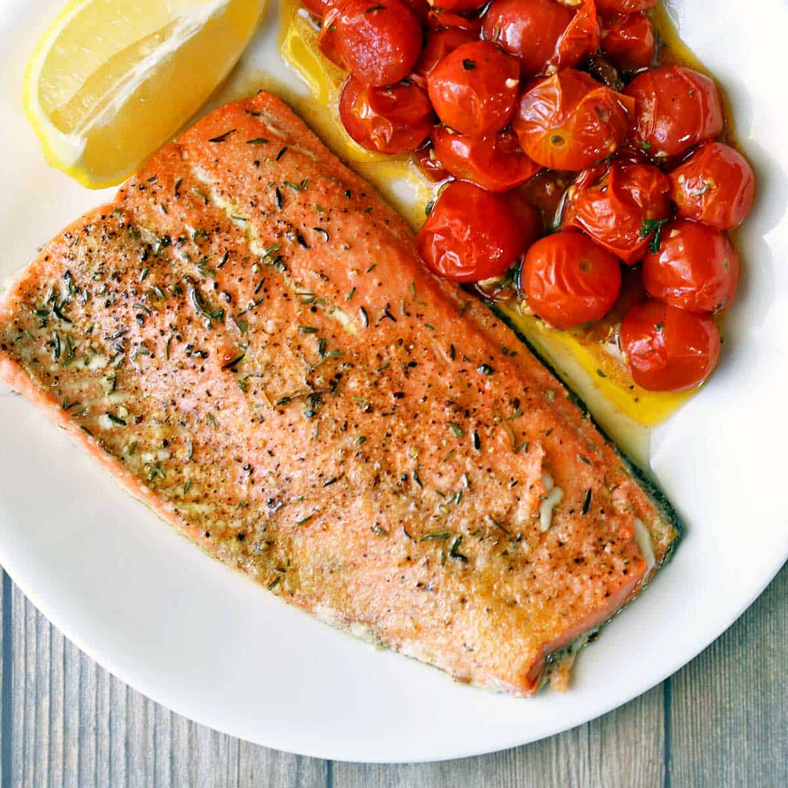

Smashburgers

Description
Nothing beats a good smashburger! Get ready to go to flavortown and buss down on the best
burger you'll ever eat in your life.
After a trip to Japan, the first meal I ate when I got back to the States was this very
smashburger. Oh how I missed a good American burger.
Ingredients
- Ground Chuck (80% lean)
- Potato Rolls
- Lettuce
- American Cheese
- Yum Yum Sauce
- Salt
- Pepper
- Butter
Steps
- Toast your buns. (Don't forget to butter them!)
- Roll the ground chuck into small balls but don't season them yet.
-
Prepare your buns: spread a nice layer of Yum Yum sauce on both buns and top with
a crunchy layer of lettuce
- Heat a pan/skillet to 370 degrees Fahrenheit and add a little oil
-
Put a ball into the pan and smash it as much as you can! Then season that side with
salt and pepper.
- Flip, top with cheese, and let the cheese melt.
- Assemble the burger and you're done!